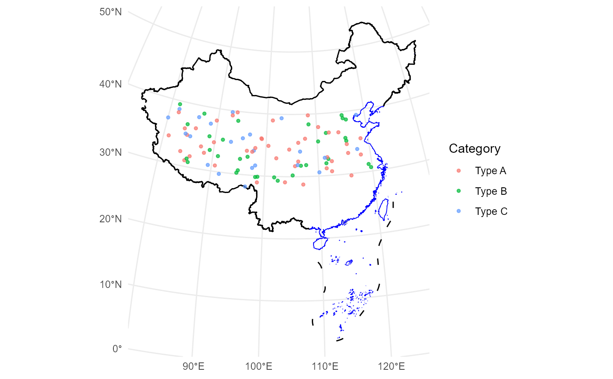

geom_loc is a flexible function that adds spatial data to a ggplot, supporting both sf and tabular data frames.
It allows color mapping based on a grouping variable in the data.
Usage
geom_loc(
data,
lon = NULL,
lat = NULL,
crs = "+proj=aeqd +lat_0=35 +lon_0=105 +ellps=WGS84 +units=m +no_defs",
mapping = aes(),
...
)Arguments
- data
A data frame, tibble, or
sfobject.- lon
Character. The name of the longitude column in
data(required ifdatais tabular).- lat
Character. The name of the latitude column in
data(required ifdatais tabular).- crs
Character. Coordinate reference system (CRS) to which the data should be transformed. Defaults to "+proj=aeqd +lat_0=35 +lon_0=105 +ellps=WGS84 +units=m +no_defs".
- mapping
Aesthetic mappings created by
aes(), such ascolor.- ...
Additional aesthetic mappings passed to
geom_sf, such assize,alpha.
Examples
# Example with tabular data from the package
data(pollen) # Load the example data provided by the package
ggplot() +
geom_loc(
data = pollen, lon = "Longitude", lat = "Latitude",
mapping = aes(color = `Sample type`), size = 1, alpha = 0.7
) +
labs(title = "Sample Points on Map")
#> Linking to GEOS 3.11.2, GDAL 3.8.2, PROJ 9.3.1; sf_use_s2() is TRUE
